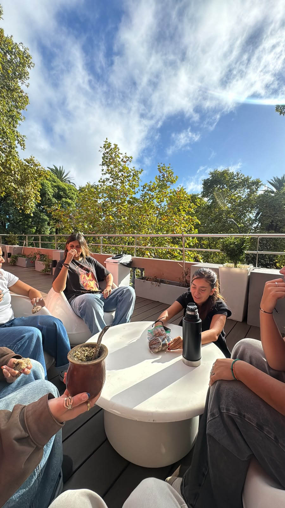

Con amigas

El mate es la excusa perfecta para juntarse. Alrededor de una ronda de mate nacen las mejores charlas, se comparten secretos, risas y anécdotas.
No importa dónde estemos, si hay un termo y un mate en el medio, la tarde con amigas ya es un planazo asegurado.